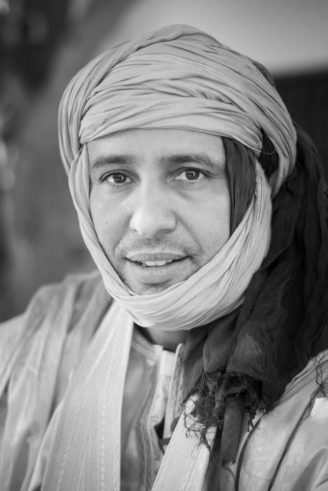

اللجان
أعضاء المهرجان
رئيس المهرجان
محمد فال أحمد سالم
محمد فال أحمد سالم، دبلوم دراسات عليا أدب إنجليزي من جامعة محمد الخامس في الرباط. صحفي ثم مراسل متجول لشبكة الجزيرة منذ عام 2001. مقيم في الدوحة، قطر. مهتم بالزراعة والبيئة وبفكرة التنمية القاعدية للمجتمع
رئيس اللجنة الفنية

سيدي يحي
سيدي يحي، فنان تشكيلي يرسم ويقدم أعماله منذو 1987 في موريتانيا السنغال الدول المغاربيه الإمارات سوريا فرنسا واسبانيا. أستاذ مادة الفنون البصرية لأزيد من خمسة عشرة سنة بالمدرسة الأمريكية الدولية بانواكشوط
رئيس لجنة العلاقات العامة
محمدو الصلاحي
مهندس المعلوماتية والإتصال من جامعة ادويزبورج المانيا كاتب ومؤلف يوميات أغوينتنامو وكتاب أحمد والزرقاء ناشط في حقوق الإنسان
المدير العام
حميد ون خرشف
حميد ون خرشف المندوب الجهوي للمكتب الوطني للسياحه في ولاية أنواكشوط الغربية
أدي ابراهيم أسويدأحمد
الدي ولد ابراهيم ولد اسويد أحمد هو أحد ابرز شخصيات البلد منذ الاستقلال. تقلد عدة مناصب وزارية في عهد الرئيس المختار ولد داداه وبعدها تنقل بين عواصم العالم كسفير فوق العادة لبلاده قبل ان يعود للوطن وينتخب عضوا في مجلس الشيوخ لفترة .معينة وقبل كل ذلك يعتبر الدي من الاداريين الأول في البلاد حين عمل كقائد لدائرة الحوض الغربي من عاصمتها "عيون .العتروس". ويعود له الفضل بعيد الاستقلال في التأسيس الاداري لمدينة الطينطان كعاصمة للمقاطعة ولا بد ان ننوه الى ان الدي وهو سليل الامارة الإدوعيشية في تگانت حيث مسقط رأسه وقع في حب البادية منذ شبابه وخاصة بادية ّ أفل في ولاية الحوض الغربي التي ظل ينتجع سهولها ووديانها كمنم اصيل حتى خلال فترات عمله سفيرا مقيما خارج .البلد وحاول في نفس الوقت جلب ادوات الحداثة للمنطقة من تهجين للخيول والابقار وزراعة ممكننة وسينما وفنون .جميلة وحين أدركه الكبر اختار بادية الطينطان سكنا دائما له ولعائلته ولا يزال مقيما مطمئنا بها نسال تعالى له دوام .الصحة وطول العم
محمد إدوم
محمد إدوم شاعر، صحفي، مدير ثقافي ومدرب في مجال إدارة المشاريع والمؤسسات الثقافية، من مواليد 28ديسمبر 1981 في كيفه حاصل على المتريز في الآداب والترجمة من كلية الآداب والعلوم الإنسانية/جامعة نواكشوط وشهادة كأني صحفي السلك العالي المدرسة الوطنية للإدارة والصحافة والقضاء. حاصل على جائزة ملتقى الشارقة للإبداع الشبابي 2012 والمركز الثالث في مسابقة أمير الشعراء 2005 وجائزة شاعر عكاظ في المملكة العربية السعودية 2020. المنسق الثقافي لبيت الشعر- نواكشوط؛ الأمين العام لمجلس خبراء الثقافية بإذاعة موريتانيا؛ صانع محتوى في منصة "ذات" ومركز "إثراء" السعودية؛ عضو الجمعية العمومية ومدرب مشاريع ثقافية لدى مؤسسة المورد الثقافي بلبنان؛ وعضو الهيئة الإستشارية ل -مشروع فجر- السفارة الفرنسية في موريتانيا
نوح عيسى
نوح محمد عبد الله عيسى من مواليد 1991 في الطينطان حاصل على الباكلوريا 2011؛ الليصانص 2015 من جامعة لعيون؛ والماستر 2019؛ خريج المدرسة العليا للتعليم 2015؛ أستاذ اللغة العربية والتربية الإسلامية؛ شارك في عدة ندوات وقدم عدة برامج تلفزيونية عضو لجنة تحكيم شاعر التوحيد 2014 2015 2016
محمد محمود المصطفى
محمد محمود المصطفى من مواليد 1988 في الطينطان خريج محظرة؛ حاصل على شهادة ميكانيك عامه من مركز التكوين بدار النعيم وفترة تطبيق مع شركة تويوتا موريتانيا 2014-2015. ناشط في الجمعيات الخيرية والثقافية.
الشيخ سيدي
الشيخ سيدي حاصل على ديبلوم دكتورا سلك ثالث في النشاط الإشعاعي والبيئة من جامعة لاس بلماس بإسبانيا. مكلف بمهمة سابقا بوزارة النفط والطاقة والمعادن. الوظيفة الحالية موظف سامي بمنطقة إستثمار نهر السنغال (مدقق داخلي في شركة تسيير واستغلال سد دياما)